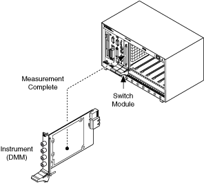
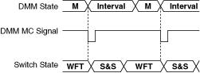

NI 建议在使用 NI 开关和 DMM 产品时使用握手。如果使用没有触发输入的其他品牌硬件，NI 建议使用同步模式。
通过同步扫描，数字万用表进行测量并生成数字脉冲——测量完成 (MC) 信号。当开关接收到这个数字脉冲时，它会前进到其扫描列表中的下一个条目。DMM 在一个时间间隔后进行下一次测量。您必须通过配置间隔采样触发器来编程 DMM 间隔时间。将间隔 参数设置为开关激活和稳定所需的时间。在启动 DMM 进行首次测量之前启动开关。下图表示同步扫描操作。
|
注意 某些设备可能不支持扫描。有关支持的功能的更多信息，请参阅您的设备手册。 |

下图为同步扫描时序图。

在哪里
M = 测量
WFT = 等待触发
S&S = 切换和稳定
 提交有关此主题的反馈。
提交有关此主题的反馈。 访问ni.com/support以获得技术支持。
访问ni.com/support以获得技术支持。